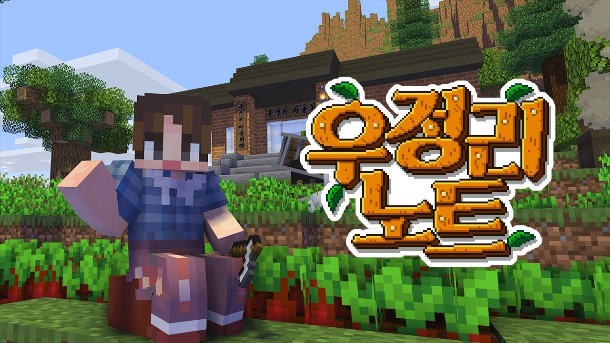

자빱의 마인크래프트 콘텐츠 | ||
| 우정리 노트 | 빱라임씬 | 토깽뎐 |
| 여걸세븐 | 자매꽃이 피었습니다 | 동개's 할로윈 파티 |
| 자빱상사 | 서리사막의 도둑들 | 계수떡집 오늘 쉬어갑니다 |
| 양들이 잠드는 시간 | ||
지친 일상을 바꿀 귀농 컨텐츠, 시작합니다!
|  | |
| 기획·제작 자빱TV | |
| 진행 자빱TV | |
| 진행 기간 2020년 2월 22일 ~ 2020년 5월 2일 |
우정리 노트는 유튜버 자빱이 기획·제작·진행한 시청자 참여형 마인크래프트 콘텐츠이다. 게임이라는 플랫폼에서 진행되는 유튜브 예능 콘텐츠1 이자 출연진 전원2이 여성인 여성예능이다. 할머니의 편지를 받고 전라도 우정리에 오게 된 자빱의 우정리 적응기와 숨겨진 진실을 파헤치는 힐링·추리 콘텐츠로, 마인크래프트에 동물의 숲과 스타듀밸리, 크라임씬의 요소를 가미하여 자빱만의 스타일로 풀어냈다. 하지만 해당 게임들을 알지 못하더라도 감상과 몰입에는 지장이 없다. 대본이 없이 진행되기에 플레이어로 설정된 모든 캐릭터들이 각자의 역할에 따라 즉흥적인 롤플레잉을 보여준다.3 2020년 2월 22일부터 5월 2일까지 10회(편집본 40부작)으로 방송되었다.
| 우정리노트 예고편 |
우정리 노트는 기존 주민(스태프)들과 외지인(자빱, 시청자)이 함께 플레이한다.
두 명의 새로운 주민 국봉, 덕구의 경우 시청자들에게 따로 참여 신청을 받아 선별했으며 자빱과 마찬가지로 외지인 역할을 맡았다.
스태프와 시참자로 구분하는 이유는 스토리 진행 및 기획을 맡은 사람과 기획에 참여하지 않고 플레이어를 도와 스토리를 같이 진행하는 사람을 나눠 부르기 위함이다.
| 스트리머(플레이어) | 자빱 |
| 스태프 캐릭터 | 곡길, 기린, 대지, 람지, 복수, 왕눈 |
| 시청자 참여 캐릭터 | 국봉, 덕구 |
| NPC | 고북 |
| 아래의 주민들 이미지는 본편의 자막에서 쓰인다. | |||
| 곡길댁 | 기린댁 | 대지댁 | 람지댁 |
| 복수댁 | 왕눈댁 | 국봉댁 | 덕구댁 |
서울 생활에 지쳐 할머니가 살았던 우정리로 돌아온 토끼, ‘김자빱’.
우정리의 치안을 책임지는 경찰 코끼리, ‘이곡길’.
우정리의 밥을 책임지는 기린다방의 주인, ‘김기린’.
우정리의 대부분의 건물을 관리하는 복돼지 복덕방 주인, ‘복대지’.
패션에 관심이 많은 프랑스 유학파 출신 다람쥐, ‘박람지’.
무시코인 판매를 전담하는 심술 전당포를 운영하는 여우, ‘김복수’.
우정리의 청년회장 개구리, ‘나왕눈’.
냄새 제거 수술을 받고 우정리로 이사 온 스컹크, '방국봉'.
'H.O.T'를 좋아하는 천방지축 오리, ‘최덕구’.
우정리 노트는 1990년대의 전라도 마을 ‘우정리’에서 벌어지는 일들을 담았다.
우정리는 모계사회이기 때문에 어머니의 성씨를 따른다.
티저 영상은 게임 <스타듀밸리>의 인트로를 연상케 하며, 동물 캐릭터가 지내는 마을에 외지인이 이사와서 같이 지낸다는 점에서 게임 <동물의숲>도 떠올리게 하지만, 주인공 자빱의 할머니가 편지를 남기며 그 편지를 본 주인공 자빱이 우정리로 향한다는 점과 물론 우정리에 도착한 뒤 만나고 교류하는 동물 캐릭터 모두의 성별이 여성이라는 점, 모두 사회적 꾸밈이 없는 편안한 디폴트 패션을 고수하며 남성이 배제된 채 여성끼리만-여성혐오없이-생활한다는 점 등에서 <스타듀밸리>와 <동물의숲>과는 다르게 우정리 사회가 여성 중심 사회일 것임을 추측할 수 있다는 점이다.
마을 주민('NPC' 포함)을 포함한 등장인물은 모두 여성으로 구성되어 있다. 비여성은 캐릭터들의 입에서 어쩌다 한 번 언급되며, "남자는 일회용품이여."4정도로 그친다.
맹연습5 에도 불구하고 점점 충청도 사투리 '~유'와 섞이게 되면서 전라도 사투리보다는 ‘우투리(우정리 사투리)’ 혹은 '충라도'라고 말한다. 콘텐츠를 즐긴 수많은 시청자들 또한 이 우투리의 영향으로 출처 모를 사투리를 구사하고 있다며 각자의 경험담을 공유하곤 한다. 자빱을 제외한 스태프들 중 전라도 사람이 없다. 이 때문에 자빱은 스태프들에게 전라도 사투리를 녹음해서 올리라고 했다고 한다(!)
"우정리 노트는 익명의 여성들이 가상환경(마크)에서 할 수 있는 최고의 예능이라고 생각함.
자빱의 콘텐츠 기획력과 분석력은 정말 뛰어나다. … 여성들이 방송에서 마음 놓고 웃을 수 있도록 매번 노력하는 게 보이고 무엇보다 재미있다."6
구독자의 성향에 대한 철저한 분석, 자빱을 포함한 전 스태프들의 치밀한 기획과 예측 못 할 애드리브로 탄생한 탄탄한 여성 예능.
핵심 스토리가 존재하고, 시청자와 함께 그 스토리를 따라가는 형식의 콘텐츠는 종종 찾아볼 수 있으나 우정리 노트는 단순히 정해진 스토리라인을 따라 진행되는 드라마가 아니다. 핵심 서사는 존재하지만, 각 캐릭터는 정해진 대본을 외우는 게 아니라 맡은 캐릭터에 몰입한 채 자신의 역할을 플레이하고, 게임의 플레이어인 자빱은 자신과 시청자의 의견에 따라 끊임없이 선택을 하고 각 캐릭터와 상호작용을 하며 서사를 이끌어간다. 우정리에 이사를 와 새로운 주민을 만나고 농장을 확장해가며 주민들과 관계를 쌓아가고, 우정리의 여러 사실을 알아가는 자빱과 시청자는 게임 시작과 동시에 동등한 플레이어가 된다. 다른 주민들 역시 자빱이 없는 곳에서도 삶을 이어나가며 서로 다양한 상호작용을 하여 생활을 꾸려나간다. 줄기는 있으나 대본이 없고 핵심은 있으나 선택은 플레이어의 몫이라는 점으로 인해 특수한 즐거움과 폭발적인 몰입을 유도하는 신선한 콘텐츠다. 이러한 매력과 재미에 빠져 콘텐츠를 감상한 시청자가 또다른 사람들에게 영상을 알리고 새로 유입된 시청자가 또다시 구독자가 되는 선순환이 일어나고 있다.
전원이 여성이라는 점, 모계사회라는 점, 인간 형태가 아니라 동물 형태의 캐릭터뿐이라는 것7 역시 엄청난 강점. 특히 각 주민들은 어디서도 보기 힘들었던 구체적인 캐릭터성을 띠고 있는데, 여성 캐릭터에게 좀처럼 주어지지 않던 서사나 특성이 제약 없이 녹아들어 있으며 각 동물 캐릭터 역시 해당 동물의 기존 이미지에 얽매이지 않으면서도 동물들의 특성을 적절히 이용함으로써 모든 캐릭터가 구체적이고도 특별한 서사와 특성을 갖추게 되었다.
기본적으로 게임의 형태로 만들어져 있기 때문에 게임 시스템이 체계적으로 구성되어 있지만, 일반적인 게임과 달리 그 시스템 속의 인물들이 모두 실시간으로 반응하기 때문에 아주 생생한 상호작용이 이루어진다. 플레이어의 선택, 다른 캐릭터들의 행동, 각 캐릭터의 관계 등이 서로 유기적으로 영향을 미친다는 점 또한 특징적. 예컨대 게임 <스타듀밸리>의 경우 해당 인물이 좋아하는 선물만 잘 안겨줘도 호감도가 쭉쭉 오르며, 다른 인물들과의 관계나 다른 인물들과 있었던 사건이 다른 인물과의 관계에 거의 영향을 미치지 않지만 우정리노트의 경우에는 그 모든 게 매우 유기적으로 작동한다. 이는 우정리노트의 npc가 단순한 npc가 아니라 '실시간으로 실제 사람이 롤플레잉을 함'으로써 구현되는 캐릭터들이기 때문에 발생하는 특별한 효과라고 할 수 있다.
모든 캐릭터가 전라도 사투리를 사용하여 전라도 사투리를 가시화했다는 데 의의가 있다. 지역과 무관하게 '우투리'에 중독된 시청자들이 대거 속출하고 있다. 캐릭터와 유행어 등을 통해 미디어에서 흔히 가시화되는 경상도 사투리와 달리, 전라도 사투리는 드라마나 영화 같은 미디어 속에서도 깡패만 사용하거나 우스꽝스러운 캐릭터만 사용하는 사투리에 가까웠다. 조금은 엉성할지라도, 전라도 사투리를 친숙하게 만들고 가시화하는 데에 성공했다.
유튜브 자빱TV 채널의 고급 멤버십 또는 최고급 멤버십에 가입하면 우정리 비하인드 영상과 다른 엔딩15들을 볼 수 있다. 일반 멤버십으로는 지원되지 않으며 고급 멤버십은 한 달 주기로 과거 영상이 비공개되고, 최고급 멤버십은 멤버십 영상을 항시 볼 수 있다.
우정리 노트의 멤버(스태프, 시참자)들과 함께 하는 멀티게임 콘텐츠로 생방송으로 진행한다. 외전은 우정리 노트와는 별개의 콘텐츠로 스토리 진행과는 상관없다.